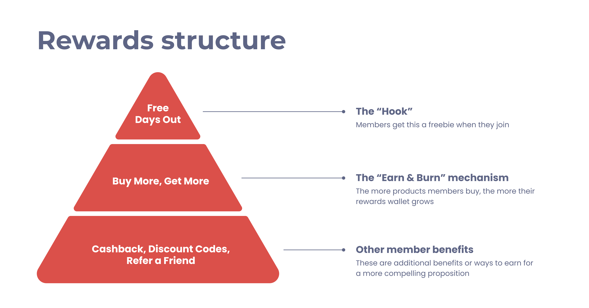

💼 MoneySuperMarket
🕰️ 2022 - 2024
🧑🏻🎨 Product Designer
🎯 Opportunity & Business goal:
Research suggests users are not loyal to a specific price comparison website. The primary business goal was to increase purchases per user, shifting behaviour from one-off, price driven visits to repeat engagement.
💡 My approach:
Starting from a vague brief, I led and executed the design vision for the reward experience, from problem framing and research through concept definition, validation, and launch.
📈 Success metrics:
• 2 purchases per user (vs 1 before)
• 1 million members reached in 2 years
⚙️ Other functions involved:
• PM for effort estimates and technical constraints
• Brand Design to produce illustrations and imagery
• Marketing to produce the Tone of Voice
• Finance to come up with reward amounts


I facilitated an in-person workshop with senior stakeholders to align on the core elements of the SuperSaveClub.
4 core questions emerged that directly shaped the product strategy:
We evaluated multiple reward providers against these criteria. GiftCloud emerged as the strongest option due the variety of rewards and ability to support the above.
What stakeholders wanted: Lead with “Free Days Out” as the primary reward mechanism.
Why I pushed back: Free Days Out didn’t support long-term monetisation, it was just a free give away, so I strongly recommended positioning “Buy More, Get More" as the main mechanism, while using Free Days Out as an onboarding hook to drive initial adoption.
This trade-off led to a reward structure that balanced user appeal with long-term business sustainability.
I began by investigating how users choose price comparison websites and what drives repeat usage.
Methodology: Survey - 100 participants who use comparison sites.
Key learnings: A significant number of users don’t have a preferred comparison site. The majority rely on the first results provided by Google and prioritise the cheapest prices.
Key decisions: Based on a Top 10 generated during a Card Sort with 50 users, I recommended leading with gift cards from Amazon, restaurants and supermarkets.
What was unexpected: Free Days Out scored quite low, however I recommended testing it, as it was an easy "plug & play" integration offered by GiftCloud.
Outcome: After launch, Amazon proved to be the most popular gift card, followed by Sainsbury's and JustEat. Free Days Out also demonstrated to be a compelling feature thanks to the variety of attractions.

I partnered with the PM to identify low-risk, high-impact mechanics such as Buy More, Get More, Refer a Friend and Discount Codes.
A key decision I made which influenced the development phases was to start with a few products rather than the full list of 25 products. Sales data helped identifying the 4 most popular ones.

I believe conceptual designs should be tested as much as final products. In fact, while brand assets were still in progress, I proactively produced a design using existing assets, to avoid slowing down the process.

After iterating on feedback and applying final brand assets, I ran a second round of usability testing to measure confidence for our MVP.
Scores improved, which contributed to the validation of the MVP with 280k members in 12 months.

As part of a broader 2024 strategy to modernise the mobile app experience, SuperSaveClub became the first area to adopt a fresh design.
Key contributions:
• Encourage horizontal scrolling behaviour rather than relying on vertical real estate
• "Traffic light" system to visually indicate the rewards status
• Moving away from the huge wallet on top of the screen in favour of a more modern online banking style

What failed: Discount codes consistently showed low engagement. Follow-up surveys revealed that many partner brands were unfamiliar or not perceived as relevant. Based on these findings, I recommended moving away from generic discount codes and towards more personalised offers.
What I would do differently: Given the consistently high engagement with cashback, I would push harder to prioritise this earlier over discount codes and refer a friend.
What I've learned: This project reinforced my belief that rewards should be sequenced, not stacked. Introducing too many earning mechanisms before users understand the core value creates friction and slows long-term growth.